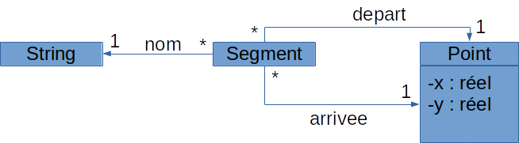
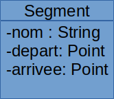
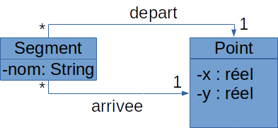
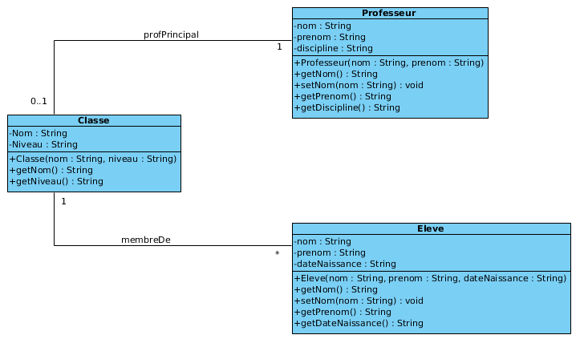
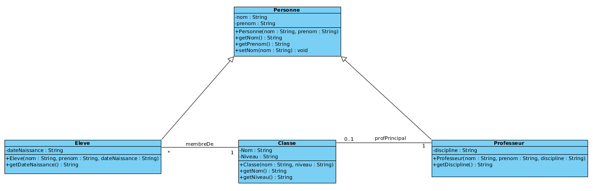

Programmation orientée objet
I. Introduction
Le paradigme objet est un paradigme secondaire. Ainsi, on peut trouver des langages impératifs orientés objets (Java, Smalltalk) par exemple, mais aussi des langages fonctionnels (comme OCAML).
Le principe de base de la programmation orientée objet est le suivant : plutôt que d'avoir d'un côté des types de données, et de l'autre côté des fonctions pour manipuler les données, on va regrouper le tout. Et c'est ainsi que sont apparus plusieurs grands types de modèles orientés objets, dont celui que nous allons présenter ici, car c'est le plus utilisé, le plus connu, et le plus rigoureux : le modèle à base de classes.
Il existe d'autres types de modèles orientés objets (Javascript, par exemple, utilise un modèle à base de prototypes). Il y a malgré tout des points communs avec le modèle de classes. Concernant Python, je dirais qu'il s'agit d'un modèle à base de classes (car notions de classes et d'objets bien distinctes) mais dégénéré mixé avec des aspects venant des modèles à prototypes. Cela en fait un langage à part du point de vue des aspects "orienté objet".
Dans la suite du document, nous allons aborder l'essentiel des concepts objets. Pour chaque concept, après sa description informelle, nous donnerons sa représentation en UML, puis nous étudierons ce que cela donne en Python.
Il faut donc commencer par parler un peu d'UML. UML signifie Unified Modeling Language. Il s'agit d'un langage de modélisation créé dans les années 90 afin de permettre la modélisation d'un logiciel avant sa conception. Ce langage est en fait un ensemble d'une dizaine de langages graphiques permettant de représenter une spécification sous différents aspects. Nous n'utiserons qu'un de ces langages : celui des diagrammes de classes (abordé aussi dans la partie sur les bases de données).
II. Notion de classe et d'objet
A. Dans un monde qui manque de classe...
Dans la plupart des langages informatiques, on manipule des données typées. Par exemple, 3 est une donnée de type Entier, true est une donnée de type Booléen, etc.
Lorsque ces types simples ne suffisent plus, de nombreux langages permettent de construire nos propres types et de leur donner un nom pour pouvoir les utiliser. Ces nouveaux types, constitués de plusieurs champs ou attributs, chacun ayant son propre type, sont souvent appelés enregistrements. Par exemple, en C, si on veut manipuler des points dans un espace à 2 dimensions, on pourra créer un nouveau type ainsi :
typedef {
double x;
double y
} point;
Il sera alors possible de déclarer des variables de type point ainsi:
point pt;
Notez que cela peut ressembler un peu aux tuples de Python sauf que... il n'y a pas de type spécifique pour un profil de tuple particulier.
Ensuite, on pourra définir des fonctions manipulant des données de type point, comme une fonction translater(dx, dy) ou une fonction distOrig() qui donne la distance du point à l'origine (que l'on suppose avoir comme cordonnées (0,0)). Mais tout cela sera un peu en désordre.
Voilà par exemple ce que cela pourrait donner en Python :
from math import sqrt ''' Ici le point est représenté par un tuple de 2 entiers ''' def translater(pt: tuple[int,int], dx: int, dy: int): pt[0] += dx pt[1] += dy def distOrig(pt : tuple[int,int]): return sqrt(pt[0]*pt[0] + pt[1]*pt[1])
B. Alors que quand on a la classe...
1. Définitions
Dans les langages à base de classes, lorsqu'on a besoin d'un nouveau type, on le crée. Ces nouveaux types s'appellent des classes. Une classe est caractérisée par :
- un nom qui va correspondre à un nouveau type;
- des attributs ou champs ou variables d'instance ; ie. des variables dont la valeur est propre à chaque donnée du type ce que sont "x" et "y" pour les points par exemple ;
- des méthodes : ce sont des fonctions qui vont s'appliquer aux données du nouveau type ;
- des constructeurs : ce sont des fonctions qui initialisent les variables d'instance des objets à leur création.
On appelle objet ou instance une donnée dont le type correspond à une classe.
- Un objet doit d'abord être créé. Cela implique la réservation de l'espace mémoire nécessaire ainsi que son initialisation, faite en faisant appel à un constructeur.
- Une fois l'objet créé, il est possible de lui appliquer les différentes méthodes définies dans sa classe, le passer en paramètre à d'autres méthodes, etc.
-
Lorsqu'un objet n'est plus nécessaire, il faut le détruire pour libérer la place mémoire qu'il occupait. Suivant les langages, la destruction d'un objet peut être soit explicite (c'est le cas en C++ par exemple, avec l'instruction
delete) soit implicite (comme en Python ou en Java). Dans le cas d'une destruction implicite, c'est un processus spécifique, appelé ramasse-miettes, qui s'en charge. Ce processus détecte les objets devenus inutiles (car ils ne sont plus référencés) et les supprime (quand il y a du temps machine disponible ou que la mémoire commence à être remplie).
2. Représentation en UML
En UML, on pourra représenter la classe Point ainsi :
Point
x: reel y: reel
Point(vx,vy) translater(dx : reel, dy: reel): void distOrig(): reel /*sans paramètre maintenant*/
Comme on peut le voir, une classe est représentée par un rectangle divisé en 3 parties :
- En haut, le nom de la classe ;
- Au milieu, les variables d'instance de la classe ;
- En bas, les méthodes et constructeurs. Un constructeur apparaît comme une méthode ayant le même nom que la classe et n'ayant pas de type de retour.
Par ailleurs, on peut constater que l'objet du type de la classe auquel on applique une méthode (souvent appelé l'objet courant) n'est pas indiqué parmi la liste des paramètres des méthodes. En effet, la méthode s'applique de facto à une instance de la classe ; celle-ci est donc implicite dans la déclaration de la méthode.
3. Manipuler les instances d'une classe
Voila maintenant à quoi pourrait ressembler une utilisation de cette classe (les notations utilisées ici ne sont pas issues d'un langage réel mais visent à montrer les points communs entre les langages orientés objet):
p1 = creer Point(3,4) p2 = creer Point(11,13) p3 = p1 print(p1) (3,4) print(p2) (11,13) print(p3) (3,4) d = p1.distOrig() print(d) 5 p1.translater(2,3) p2.translater(1,2) print(p1) (5,7) print(p2) (12,14) print(p3) (5,7)
À partir de cet exemple, on peut déjà noter un certain nombre de choses :
- la construction d'un point fait appel à un constructeur (lignes 1 à 9) ;
- pour appliquer une méthode à un objet, on utilise la notation pointée :
objet.méthode(paramètres); (lignes 10, 13, 14) ; - une méthode a accès aux variables d'instance (attributs) de l'objet auquel elle est appliquée (lignes 10 à 12) ;
- une méthode peut modifier directement l'objet auquel elle est appliquée (lignes 13 à 18) ;
- Les objets sont gérés par référence : la modification appliquée sur
p1(ligne 13) se retrouve surp3(ligne 20).
Pour bien comprendre le dernier point, on peut exécuter ce programme en utilisant l'applicatiob web "Python Tutor" dont l'URL se trouve dans les commentaires du programme.
4. Mise en oeuvre dans un langage de classes propre
Dans un langage à base de classes plutôt propre, comme Java, voilà comment on définirait la classe Point et comment on l'utiliserait (vous pouvez tester rapidement ce programme là) :
public class Point {
// déclaration des variables d'instance
private double x;
private double y;
// déclaration d'un constructeur
Point(double initX, double initY) {
this.x = initX; //on peut aussi écrire x = initX
this.y = initY;
}
// déclaration d'une méthode utilisant les attributs de l'objet auquel
// elle est appliquée
public double distOrig() {
return Math.sqrt(x*x + y*y);
}
// déclaration d'une méthode modifiant l'objet auquel elle est appliquée
// et ne renvoyant rien
public void translater(double dx, double dy) {
this.x += dx;
this.y += dy;
}
public static void main(String args[]) {
Point p1 = new Point(3.0, 4.0);
System.out.println(p1.distOrig());
p1.translater(1,1);
System.out.println(p1.distOrig());
}
}
Comme on peut le voir dans ce type de langage :
- Les variables d'instance sont clairement déclarées ;
- À l'intérieur d'une méthode, utiliser une variable d'instance signifie utiliser la valeur de la variable d'instance de l'objet auquel la méthode est appliquée. Par exemple, dans la méthode
translater, l'instructionx += dxsignifie que l'on ajoutedxà la valeur de l'attributxde l'objet auquel la méthode est appliquée.
5. Mise en oeuvre dans Python
Dans Python, il va y avoir quelques différences par rapport à l'exemple donné dans Java :
- Une classe possède un seul constructeur appelé
__init__; - Les variables d'instance ne sont pas déclarées explicitement dans la classe ; elles le sont en général implicitement via une initialisation dans le constructeur ;
- Dans les méthodes et constructeur, l'objet auquel la méthode est appliquée n'est pas implicite : il correspond au premier paramètre, nommé par convention
self. Du coup, l'utilisation d'une variable d'instance de l'objet auquel la méthode est appliquée requiert, dans le corps de la méthode, de préfixer le nom de l'attribut par le nom du premier paramètre de la méthode (selfpar convention) - Il est possible d'écrire une méthode
__str__(), renvoyant une chaîne de caractères. C'est cette chaîne qui sera affichée lorque'on passera l'objet en paramètre de la méthodeprint.
Voila donc l'implantation de la classe Point en Python :
from math import sqrt class Point: def __init__(self, initX, initY): self.x = initX self.y = initY def translater(self, dx, dy): self.x += dx self.y += dy def module(self): return sqrt(self.x*self.x + self.y * self.y) def __str__(self): return "(" + str(self.x) + "," + str(self.y) + ")" p1 = Point(3,4) print(p1) d = p1.module() print(d) p1.translater(1,1) print(p1)
Ainsi, en Python, la notation p.translater(x,y) peut être vue comme une ré-écriture de l'appel translater(p, x, y).
III. Un concept clé : l'encapsulation
A. Le concept
L'encapsulation est vraiment une notion clef des langages orientés objets. Ce concept consiste à interdire, depuis l'extérieur d'un objet (via un objet d'un autre type par exemple), tout accès direct, que ce soit en lecture ou en écriture, aux variables d'instances de l'objet. La seule façon d'y accéder consiste à passer par des méthodes.
Il existe notamment 2 intérêts fondamentaux à l'encapsulation :
- Garantir l'état des instances de la classe. Par exemple, interdire des points avec une ordonnée négative ;
- Permettre au créateur d'une classe de modifier la structure interne de la classe sans que cela n'impacte les utilisateurs de la classe.
Suivant les langages, l'encapsulation peut être forcée, utilisable via des déclarations explicites, ou encore conventionnelle :
- En Kotlin, l'encapsulation est forcée : les variables d'instance ne sont pas accessibles directement à l'extérieur de la classe ;
- En Java, l'encapsulation est utilisable via des déclarations explicites ; il est en effet possible d'associer des droits aux attributs et aux méthodes. Pour mettre en oeuvre l'encapsulation, on associera aux attributs le droit privé, et on associera aux méthodes qui doivent être accessibles à l'extérieur de la classe le droit public;
- En Python, l'encapsulation est purement conventionnelle : on peut toujours accéder aux variables d'instance d'un objet à l'extérieur de la classe. Mais c'est fortement déconseillé.
En respectant l'encapsulation, si l'on souhaite donner accès à un attribut depuis l'extérieur de la classe, on utilisera des méthodes dédiées, que l'on appelle des accesseurs :
- Un accesseur en lecture est une méthode qui, se contente de renvoyer la valeur d'une variable d'instance. Par convention, son nom est le nom de la variable d'instance précédé de get ;
- Un accesseur en écriture est une méthode qui se contente de modifier la valeur d'une variable d'instance, avec éventuellement une vérification de la nouvelle valeur. Par convention, son nom est le nom de la variable d'instance précédé de set.
B. En UML
En UML, le droit "privé" se représente en mettant un "-" devant un attribut ou une méthode, le droit "public" en mettant un "+". Si on veut que les coordonnées des points soient consultables hors des méthodes de la classe, et que l'ordonnée puisse être modifiée hors des méthodes de la classe, en interdisant les ordonnées négatives, on peut ré-écrire la déclaration de notre classe en UML ainsi :
Point
-x: reel -y: reel
+Point(vx,vy) +get_x(): reel +get_y(): reel +set_y(valeur: reel): void +translater(dx : reel, dy: reel): void +module(): reel
C. En Python
Comme cela a été dit plus haut, en Python même si on fait tout pour que l'encapsulation soit possible, il faudra encore la respecter explicitement (ie. rien n'est controlé par l'interpréteur) :
from math import sqrt
class Point:
def __init__(self, initX, initY):
self.x = initX
self.y = 0
self.set_y(initY)
def get_x(self):
return self.x
def get_y(self):
return self.y
def set_y(self, nouvelleValeur):
if (nouvelleValeur >= 0):
self.y = nouvelleValeur
def translater(self, dx, dy):
self.x += dx
self.y += dy
def module(self):
return sqrt(self.x*self.x + self.y * self.y)
def __str__(self):
return "(" + str(self.x) + "," + str(self.y) + ")"
p1 = Point(3,4)
print(p1.get_x())
p1.set_y(-2)
print(p1)
# Possible, mais à ne SURTOUT PAS FAIRE :
p1.y = 2
print(p1)
# Car on peut alors aussi faire ça :
p1.y = -2
print(p1)
D. Simuler des attributs privés en Python
En Python, lorsque le nom d'un attribut commence par "__", celui-ci est automatiquement renommé ainsi : _nomClasse__nomAttribut. Étant ainsi renommé, il n'est plus aussi aisément accessible depuis l'extérieur de la classe. On peut donc définir plutôt la classe Point ainsi :
class Point:
def __init__(self, initX, initY):
self.__x = initX
self.__y = initY
def get_x(self):
return self.__x
def get_y(self):
return self.__y
def set_y(self, nouvelleValeur):
self.__y = nouvelleValeur
def __str__(self):
return "(" + str(self.__x) + "," + str(self.__y) + ")"
NB: si vous voulez tester les commandes suivantes dans votre interpréteur python, il faut au préalable charge le code de la classe Point en tapant dans votre interpréteur :
from Point import *
Voici une première conséquence d'une telle définition :
p1 = Point(3,4) print(p1) (3,4) print(p1.__x) File "<stdin>", line 1, in <module> AttributeError: 'Point' object has no attribute '__x'
D'ailleurs, si on affiche la liste des attributs définis sur l'objet référencé par la variable p1, on obtient l'affichage suivant :
p1.__dict__ {'_Point__x': 3, '_Point__y': 4}
Ce qui est plus génant par contre, ce sont les 2 comportements suivants :
- Il est possible de modifier la valeur de l'attribut
__xsans passer par son accesseur :
p1._Point__x = 7
print(p1)
(7, 4)
p1, mais cela devient un nouvel attribut :
p1.__x = 8
print(p1)
(7, 4)
print(p1.__x)
8
p1.__dict__
{'_Point__x': 7, '_Point__y': 4, '__x': 8}
IV. Rajouter des attributs à un objet
Dans un modèle à base de classes strict, une classe a un ensemble fixe d'attributs, et chaque objet aura une valeur pour chacun de ces attributs. Par ailleurs, un objet n'aura pas d'autres attributs que ceux de sa classe. En Python, ce n'est cependant pas le cas ; on peut rajouter des attributs à un objet, comme ici :
p1 = Point(3,4)
p1.z = 2
print(p1.z)
2
print(p1)
(3,4)
p1.__dict__
{'x': 4, 'y': 5, 'z': 4}
Cependant, c'est fortement déconseillé.
V. Composition entre classes
Supposons que l'on veuille créer une classe pour représenter un segment nommé. Un segment est donc caractérisé par un nom, un point de départ et un point d'arrivée (pour simplifier, on supposera que les segments sont orientés). Ainsi, pour définir la classe Segment, il faudra passer par les classes String et Point.
A. Représentation en UML
En UML, on a plusieurs façons de représenter ces associations entre classes (vous vous souvenez de ce que vous avez vu sur les bases de données ?) :
1. Utiliser exclusivement des associations

2. Utiliser exclusivement des attributs

3. Représentation mixte

4. Alors, on choisit quoi ?
Aucun des représentations ci-dessus n'est fausse. On peut donc prendre l'une ou l'autre. Cependant, on s'orientera souvent vers la dernière car la classe String n'est pas une classe propre à notre application, contrairement à la classe Point.
B. Et en Python ?
En Python ces différentes représentations donneront le même code, à savoir celui-là :
class Segment:
def __init__(self:'Segment', nom: str, depart: 'Point', arrivee:'Point') -> None:
self.nom = nom
self.depart = depart
self.arrivee = arrivee
def __str__(self) -> str:
return self.nom + "[" + str(self.depart) + "," + str(self.arrivee) + "]"
p1 = Point(1, 2)
p2 = Point(3, 4)
s = Segment("S1", p1, p2)
print(s)
NB: dans ce code, j'ai utilisé pour les méthodes un typage explicite et facultatif autorisé en Python. Attention, il n'est pas du tout vérifié par l'interpréteur. Il est exploité par des vérificateurs spécifiques et par la plupart des environnements de développement pour Python comme pycharm par exemple. Dans la plupart des cas, ces outils déclenchent un warning en cas de problème lié au typage.
Exercice 1 : Complétez la classe Segment pour rajouter un accesseur en lecture pour le nom du segment, et des accesseurs en lecture et en écriture pour les 2 extrémités du segment.
class Segment:
def __init__(self, nom, depart, arrivee):
self.nom = nom
self.depart = depart
self.arrivee = arrivee
def __str__(self):
return self.nom + "[" + str(self.depart) + "," + str(self.arrivee) + "]"
def get_nom(self):
return self.nom
def get_depart(self):
return self.depart
def get_arrivee(self):
return self.arrivee
def set_depart(self, nouveauDepart):
self.depart = nouveauDepart
def set_arrivee(self, nouvelleArrivee):
self.arrivee = nouvelleArrivee
VI. Héritage
A. Concept et représentation en UML
Supposons que l'on veuille maintenant créer un logiciel permettant de gérer les classes d'un lycée (qui enseigne dans quelle classe, et quelle matière, qui est membre de quelle classe, quelles notes un élève a eu dans quelle matière, etc.). Nous allons ainsi devoir créer plusieurs classes, et notamment les suivantes :

Quand on regarde ce schéma, on s'aperçoit qu'il y a une certaine redondance entre les classes Élève et Professeur. On peut résumer ces redondances ici :
-nom: String -prenom: String
getNom(): String getPrenom(): String setNom(nom: String): void
Ce que l'on vient d'isoler ici comme étant en commun dans les 2 classes Élève et Professeur pourrait être ce qui caractérise une Personne. Aussi, nous allons pouvoir créer cette nouvelle classe, Personne, et plutôt que de ré-écrire ces attributs et méthodes dans les classes Eleve et Personne, nous allons noter que ces 2 classes héritent de la classe Personne, ce qui signifie qu'elles intégreront tous les attributs et toutes les méthodes de la classe Personne.
Pour savoir si on peut dire, en parlant de deux classes A et B, que B hérite de A, une autre façon de se poser la question est : est-ce-que un B est un (cas particulier de) A ? Ici : est-ce qu'un élève est une personne ? Est-ce-qu'un professeur est une personne ?
En UML, le fait qu'une classe hérite d'une autre se représente avec un "grosse" flèche. On peut donc refaire notre schéma ainsi :

Une relation d'héritage peut être décrite de plusieurs façons :
- Personne est la classe mère de Élève ;
- Élève est une classe fille de Personne ;
- Personne est la généralisation de Élève ;
- Élève est une spécialisation de Personne.
B. L'héritage en Python
Nous allons commencer par écrire la classe Personne en Python :
class Personne:
def __init__(self, nom, prenom):
self.nom = nom
self.prenom = prenom
def get_nom(self):
return self.nom
def get_prenom(self):
return self.prenom
def set_nom(self, nom):
self.nom = nom
def __str__(self):
return self.prenom + " " + self.nom
Pour déclarer en Python qu'une classe B hérite d'une classe A, il faut, dans la déclaration de la classe B, faire suivre son nom du nom A entre parenthèses. La déclaration de la classe Élève commencera donc ainsi :
class Eleve(Personne):
Lorsqu'une classe hérite d'une autre, il est indispensable, dans le constructeur de la classe fille, de commencer par appeler le constructeur de la classe mère. Ceci est réalisé en appelant la méthode __init__() sur l'objet renvoyé par la méthode prédéfinie super(). Par ailleurs, on ne met dans une classe fille que ce qui diffère de la classe mère. Voici donc la classe Élève un peu plus détaillée :
class Eleve(Personne):
def __init__(self, nom, prenom, date_naissance):
super().__init__(nom, prenom)
self.date_naissance = date_naissance
def get_date_naissance(self):
return self.date_naissance
Il est également possible de donner dans une classe fille une nouvelle version d'une méthode qui existait dans la classe mère. On peut ainsi compléter notre classe Élève avec une nouvelle version de la méthode __str__() :
class Eleve(Personne):
def __init__(self, nom, prenom, date_naissance):
super().__init__(nom, prenom)
self.date_naissance = date_naissance
def get_date_naissance(self):
return self.date_naissance
def __str__(self):
return self.prenom + " " + self.nom + " [" + self.date_naissance + "]"
Dans cette nouvelle version, on s'aperçoit qu'une partie de la méthode __str__() fait le travail qui était fait par la méthode __str__ de la classe Personne (la classe mère). Aussi, plutôt que de ré-écrire cela, nous allons faire appel à la méthode __str__() de la classe mère explicitement (grâce à la fonction prédéfinie super()) ainsi :
class Eleve(Personne):
def __init__(self, nom, prenom, date_naissance):
super().__init__(nom, prenom)
self.date_naissance = date_naissance
def get_date_naissance(self):
return self.date_naissance
def __str__(self):
return super().__str__() + " [" + self.date_naissance + "]"
Il est possible de tester cette classe avec le petit exemple suivant :
e = Eleve("Mermet", "Bruno", "01/01/2000")
print(e)
print(e.get_nom())
Exercice 2 : Écrivez le contenu de la classe Professeur en la faisant hériter de la classe Personne.
class Professeur(Personne):
def __init__(self, nom, prenom, discipline):
super().__init__(nom, prenom)
self.discipline = discipline
def get_discipline(self):
return self.discipline
def __str__(self):
return super().__str__() + " [" + self.discipline + "]"